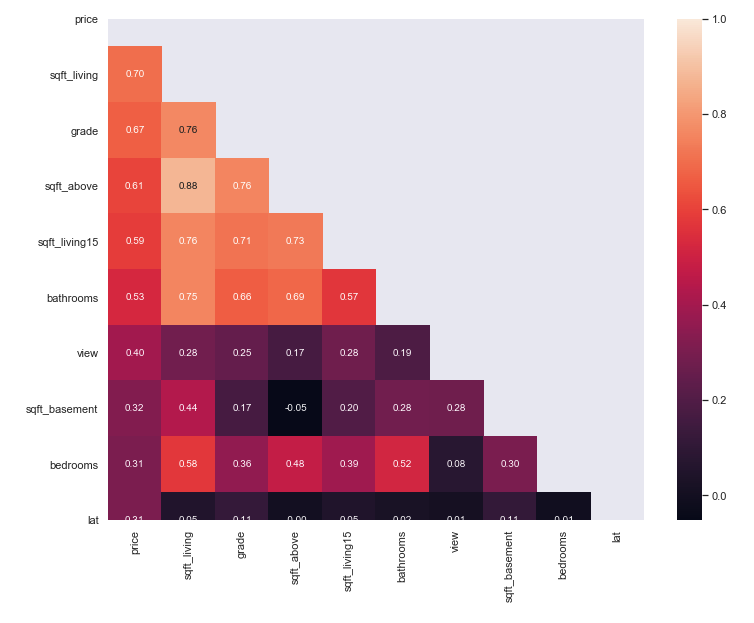

In this project, the dataset contains house sale prices for King County, which includes Seattle. The data is taken from kaggle competition House Sales in King County, USA. It includes homes sold between May 2014 and May 2015. There are 19 house features and one dependent feature price. The aim of the project is to estimate the house price.
age_after_renovation using yr_sales and yr_renovated features.zipcode has too many unique values, reduced it to 70 values.zipcode_houses which gives number of houses in each zipcode.age and age_after_renovation.log1p transformation of continuous numerical features.After comprehensive data cleaning and variable encodings, I tried various scikit learn algorithms including stacking and blending. I had created many categorical features and the catboost algorithm after standard scaling gave me the best adjusted r-squared value.
Here I used the module featuretools to create the features. I used none of aggreation primitives and only one transform primitive "divide_numeric" to create new features using featuretools. Then I also created domain knowledge features such as boolean features and log-transform large numeric features but did not create dummy variables from them. Few notes: - Using both mutliply and divide primitives gave worse results than only using divide primitive. - Removing zero feature importance features not not removing gave almost same RMSE. - Using log(target) gave better results (note: we need to inverse log-transform to do model evaluation).
RMSE : 108,184.48
Explained Variance: 0.913972
R-Squared: 0.913156
Adjusted R-squared: 0.910206scikit-learn and pandas can not deal with large data (>1GB). To scale up the project, I used big data platform PySpark.spark is a scala package and pyspark is the a python wrapper around it.pyspark, mllib is deprecated, so, I used only pyspark.ml.Random Forest in pyspark and tuned the hyper parameters to get the best Adjusted R-squared value.Using keras framework gave lower evaluation than boosting algorithms. I tried various artichitectures to deal with this regression problem.
Some observations: - making dummy variables gave worse result. - doing log transform of target gave worse result.
My results:
Explained Variance: 0.874334
R-Squared: 0.872386
RMSE : 131,142.79
Adjusted R-squared: 0.871464